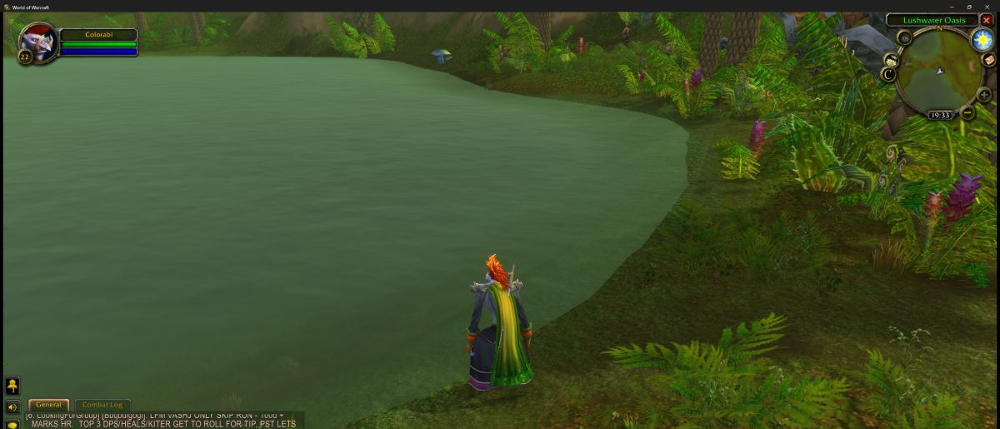

How the bot fishes
Every mechanism below is either measured in our logged sessions or tested in the offline suites. Where the evidence stops, we say so.
1 · Capture
The bot snapshots the game window with PrintWindow, a documented
Windows API. No injection into the game process, no memory reading: the bot sees
what you see on screen.
2 · Detection
Each capture is analysed in HSV colour space: the float and the water hue are separated with day/night ranges, texture and area thresholds tuned on a real Classic 1.13 client at 2336×1323. When detection is ambiguous, the bot does not click blind — it re-checks.

3 · The cycle
Cast → wait for bite → click. The bite → click latency is measured per cycle and logged; the median we announced (308 ms) comes from those logs. Clicks are sent as window messages so the window does not need foreground focus.
4 · Memory
Every visit to a spot feeds a persistent record: position, catch rate measured across visits, mobs seen nearby, time spent. The store is versioned (migrations, backups, atomic writes) and exportable — you own your data.
5 · Rounds
The planner keeps the good spots in rotation: expected cost per leg (measured travel time + mob risk + failure probability), ordered by nearest-neighbour then 2-opt improvement, in three modes (Cautious / Balanced / Exploration). The browser demo runs the same JS planner, compared with the Python one on the same map at each build.
6 · Safety stops
- F9: immediate clean stop, from any state.
- Bounded waits everywhere: no unbounded click loop.
- Failures degrade, not escalate: a failed cast is retried with limits, logged, and diagnosed; mass cast failures pause the bot instead of forcing clicks.
- Character death: the bot stops and asks for a human — recovery is in development (the state machine is specified and being implemented; until it holds in game, the safe stop is the behaviour).